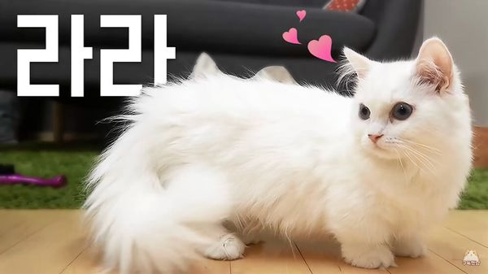

|  | |
| 이름 | 라라 |
|---|---|
| 출생 | 2017년 1월 |
| 품종 | 먼치킨 / 화이트 코트 |
| 눈 색 | 짙은 바다 |
| 성별 | 남아 |
| 몸무게 | 2.99kg (20.08.07) |
| 꼬리 길이 | 32cm |
| 별명 | 먐먀, 자유로운 영혼, 은갈치 공주, 밥상머리 여포 등 |
중성화된 암컷 흰색 먼치킨. 상징색은 연한 하늘색→연한 분홍색. 2020년 8월 기준으로 몸무게 2.99kg.
먐먀라고도 불리는데, 먀- 먀- 하고 울어서 집사가 '먐먐먀'라고 더빙한 것이 그 시초다. 라라가 먹는 것을 워낙 좋아하다 보니 '맘마'에서 유래된 별명으로 아는 시청자들도 꽤 있는 듯하다. 평소에는 산책할 때 빼고는 울음소리를 잘 안 내지만 싫어하는 것(에스테틱, 목욕, 피 뽑기 등)을 하면 꽤 많이 운다.
하얀색 장모종에 귀가 솟아 있다. 때문에 라라와 코코를 두고 '흰토끼 남매'라고 묶어서 부르기도 한다. 안 씻으면 생선 냄새 나는 것까지 똑같다. 좀 커진 다음부터는 라라를 코코와 구분하지 못하는 시청자가 많아지는 중. 코코가 나이가 더 많고 먼치킨 특성상 라라가 다리가 짧으며 코코가 부쩍 둔둔뚠뚠해졌기 때문에 덩치로도 구분이 가능하지만, 일단 집사가 알려준 구별법은 눈 색깔과 얼굴 모양. 라라의 눈동자가 짙은 바다색이라면 코코가 옅은 하늘색. 얼굴 모양은 라라는 갸름한 느낌의 마름모꼴이고 코코는 둥글둥글한 느낌의 삼각형이다. 그 외에도 라라는 코에 작은 점이 있고, 코코는 비교적 콧구멍이 크다. 눈 모양도 라라가 동그란 모양이라면 코코는 살짝 눌린 모양인 등 자세히 보면 둘의 생김새가 꽤 다른 것을 알 수 있다.이토토와 도도보단 구분하기 쉽다
여우나 족제비를 닮았다. 집사는 라라를 보고 족제비라고도 자주 부른다. 성묘가 된 지금은 풍성한 털로 고양이다운 외모를 가지고 있지만, 새끼고양이 시절에는 털이 별로 없어서 집사가 설치류라고 지칭하기도 했다.(...) 특히 배에 털이 없다 보니 탈모고양이 몸이 뒤집힐 때 마다 분홍색 배를 보여줘 크림 집사(와 시청자들)를 뿅가게 만들었...지만 17년도 하반기 들어 털이 상당히 많이 나고 몸집이 커지면서 디디, 티티, 코코와 함께 미묘 반열에 들었다. 집사도 "굉장히 이쁜 고양이인데~" 식으로 예쁘다는 걸 종종 언급한다. 18년도 들어 털이 엄청나게 자라면서 꼬리가 먼지떨이처럼 풍성해졌다.
먼치킨임에도 신체 능력이 상당히 뛰어나서, 팬들 사이에서는 '탈먼치킨' 내지 '인크레더블 라라'[83]로 자주 불린다. 일단 체력은 확실히 좋고, 자기 몸의 3배 가까이 뛰어오를 만큼 점프력도 상당하다. 이외에도 탐구와 강한 호기심, 불굴의 의지, 강인한 체력을 갖고 있어, 이미 어렸을 때부터 밥그릇을 횡단하거나 츄르 타임때 다른 고양이들은 츄르 밑에서 점프를 시도하는데 라라는 혼자 '집사의 팔을 타고 등반하는' 등 비범한 모습들을 보였다. 성묘가 되고 난 다음에는 끊임없이 주로 아일랜드 측면의 수납장 선반을 밟고 식탁 위에 올라오려고 발버둥을 치는데, 크림미식회 도중 이를 막는 것이 집사의 중요한 일이 되었다. 심지어 2번째 집에서는 식탁없이 못 올라오던 아일랜드 식탁을 먹을 것을 얻기 위해 등반하는데 성공했다!! 거기다 이젠 싱크대까지 올라올 수 있게 되었다! 먼치킨 품종들은 그 짧은 다리를 보면 알겠지만 정상적인 다리를 갖고 있는 타 품종 대비 신체능력의 절반이다. 겁많은 츄츄도 잘만 올라다니는 2층 계단을 루루 라라가 제대로 못 올라다니는 이유가 이 때문. 최근에는 사료통 열기에 도전하고 있다. 집사말로는 조만간 성공할 것 같다고...
집사가 티티와 더불어 목욕 적응 훈련을 시키고 있는 고양이 중 하나로, 아직 덩치가 작기 때문에 싱크대가 아닌 전용 욕조에서 목욕한다. 샤워기 소리를 좋아해서, 목욕은 싫어하지만 집사가 샤워를 할때면 욕실 아래에서 물장난을 치며 논다고 한다. 이외에도 후술하는 드라이기 소리 등의 생활 소음을 즐긴다고. 목욕의 공포를 줄여주려는 생각인지 집사가 욕조에 러버덕을 풀어주기도 하지만, 아무래도 관심 밖인 듯. 허구한날 날아댕기는 오리들 몸집이 작고 울음소리도 여리다보니 집사가 목욕 도중에 마음이 여려지거나 말에 (원래 없던) 영혼이 들어가기도 한다. 이와 별개로 목욕 후 드라이를 좋아하며, 심지어 다른 고양이들이 드라이를 하는 와중 다가가기도 한다. 이 모습 때문에 처음에는 라라가 청각장애가 있는 줄 알았다고 한다. 정작 이름을 부르면 오는 터라 그냥 드라이기 소리를 무서워하지 않는 것으로 밝혀졌다. 좀 자란 뒤에도 목욕에 대한 공포는 여전한 모양. 목욕을 안 하면 생선 냄새가 나는지라 흰토끼 오빠인 코코의 고등어 신사에 이어 은갈치 공주라는 별명을 얻었다(...).
평소 꼬리를 바싹 세우고 다니는데, 좋아하는 사람에게 꼬리를 살랑이는 등꼬랑지 치는 건 어디서 배워 왔어? 개냥이 같은 면모를 보이기도 한다. 자라면서 꼬리가 몸통만해진 건 덤. 꼬리를 들고 다니는 습관은 어릴적 영상에서도 찾아볼 수 있다. 특히 냠냠이 먹을 때처럼 기분이 매우 좋을 땐 꼬리가 공작새처럼 활짝 펼쳐진다고 한다. 그래선지 집사님이 라라 꼬리를 풍성한 먼지털이로 항상 교체한다는 유언비어가 있다
항상 디디를 쫓아다녀서 디라디라 커플 아니냐는 얘기가 있었는데, 2018년 5월에 라라가 디디를 좋아한다고 집사가 공인했다. 라라쪽이 더 적극적이긴 하지만 디디도 싫지는 않은 듯. 그래서인지 디디도 라라를 상당히 아껴주는 듯한 행동도 자주 보인다. 집사의 말에 따르면 디디가 있는 곳에는 항상 라라가 있다고 한다. 디디가 상자에 들어가 있으면 같이 따라 들어가려 한다. 그리고 디디에게서 싱크대에서 떨어지는 물방을 맞는 폭포수 놀이와 앞발을 변기에 올리고 변기를 쳐다보는 옹달샘 놀이를 배워서 변기에 빠질뻔한 적이 있다. 디디가 나이차이 많이나는 다정한 오빠 분위기라면 모모와는 투닥거리는 등 현실남매 같은 분위기를 자주 연출한다. 라라가 모모를 쳐다보는 표정이 영락없는 현실 오빠 바라보는 여동생. 흰토끼 남매로 엮이는 코코와는 디디와 모모의 딱 중간정도. 모모와 코코 모두 라라에게 관심을 가지지만 모모가 좀더 치대는 편이고, 라라는 코코와 모모 가리지 않고 냥냥펀치를 날리지만, 모모에게 훨씬 많은 빈도로 냥펀치를 날리고 모모는 반격을 하면서 자연히 사냥놀이로 이어지지만 코코는 라라에게 맞아도 딱히 반응을 하지 않는다.
크림히어로즈의 유일한 산책냥이. 무서워하거나 도망을 가는 다른 고양이들에 비해[84] 라라는 낯선 환경에서도 꽤 편하게 행동하고, 잘 걷다가도 그만 걷고 싶으면 집사를 쳐다보면서 안아달라고 할 정도로 산책에 익숙하다. 애초에 고양이는 영역동물이기 때문에 집에만 있는 고양이들에겐 산책이 오히려 낯선 환경으로 끌고 가는 스트레스 요인이 될 수 있다. 반면 어릴 때부터 산책시킨다면 자라서 가출냥이가 될 가능성이 높다. 영상만 보고 무작정 고양이를 산책시키는 것은 금물이다. 산책 영상에서 보이듯, 라라 역시 대부분의 시간을 집사에게 안겨 있거나 이동장에 타 있다. 그리고 사람이 없거나 인적이 드문 곳만을 골라 다닌다.
붙임성이 좋고, 고양이 치고 애교가 매우 많은 편. 집사의 침대에 매일 새벽 다섯 시마다 올라와서 집사의 코를 깨물어 깨우고, 요즘은 자고 있는 집사의 입을 톡톡 건드려서 깨우고 사냥해온 양말을 자랑한다고 한다. 아기 고양이의 격한 모닝콜 츄츄와 함께 무릎냥이로 통하며 집사의 무릎에 앉아있는 걸 매우 좋아한다. 다만, 에스테틱 시간을 몹시 귀찮아하는 모습을 보인다. 2017년 7월 6일 라이브에서 발톱을 깎다가 신경질적인 반응을 보여 시청자들을 놀라게 만든 적도 있는데, 에스테틱을 할 때마다 스트레스를 많이 받는다고 한다. 그 탓인지 그 해 여름에는 에스테틱 영상이 많이 안 올라와 있다. 빗과 발톱깎이를 든 집사를 피해 이리저리 도망다니고 낑낑거리며 엄살을 피우다가도, 도구들을 서랍에 넣자마자 평소의 애교쟁이 모습으로 돌아와서는 다시 집사에게 냐옹거리며 다가가곤 한다. 집사의 말에 따르면 자기가 원할 때는 엄청 달라붙으면서 앵기지만 평소에는 만지는 걸 좋아하지 않는다고...
호기심이 많은 편으로 특히 집사가 요리하는 모습에 큰 관심을 보이며 식탁에 미끄럼틀을 설치한 뒤로 꾸준히 미식회에 출근하고 있다. 미식회에 자주 출석하는 고양이들 중에서도 유독 집중력이 좋은 편인 듯. 9월 15일 라이브에서는 집사님이 맥앤치즈를 만들 때 손질해야 할 재료가 많아 식탁 미끄럼틀을 설치해주지 않자 캣타워에 올라가 식탁을 주시하는 집념을 보여주었다. 미끄럼틀이 없어진 이후에도 한동안 식탁 앞의 캣타워를 타고 오르기도 했다. 그리고 이를 본 츄츄는 라라를 따라가다가 캣타워 꼭대기에 매달려서 살려주새오를 외쳤다.
이쪽도 루루 못지 않게 먹성이 엄청나다. 어린 시절에는 식사 때마다 자기 몫을 다 먹고 나면 루루처럼 다른 고양이들의 밥그릇 위를 차례로 밟고 횡단하면서 밥그릇 두 개에 몸을 담근 채 빼앗아 먹는 모습을 보였다. 루루가 자기 밥그릇을 사수하려고 애썼지만 절대 지지 않고 꿋꿋이 사료를 먹어치웠던 건 덤. 때문에 집사가 종종 구치소(라고 불리는 상자)에 가두거나, 고양이 헝거 게임을 할 당시에도 식사 때마다 집사가 붙어다니면서 너무 많이 먹는 것 같으면 집사가 닥터 스톱[85]을 걸어 반강제로 게임에서 끌어내리기도 했을 정도. 얼마나 먹어댔는지 1년도 안돼서 덩치도 더 크고 나이도 언니인 츄츄보다 몸무게가 더 나갔었다. 2017년 5월 말에 들어서는 양 조절을 하는 법을 배운 듯. 이 무렵부터 살이 빠지기 시작했다.
그럼에도 여전히 집요한 식탐을 보이며 이를 이용해 '냥공 청소기' 홈쇼핑이 나오기도 했다. 모모 그룹의 기술이 집대성된 신제품으로 가격은 츄르 19900개.14,925,000원 ※주의: 배부르면 멈춤 다만 먼치킨이라 다리가 워낙 짧아서인지, 식탁 위 사료에 발이 닿지가 않아 사료를 못 털기도 했다(...).
루루와 함께 막내 기믹을 맡고 있는데, 루루가 나름 야성미가 있는 것에 비해 라라는 친화력이 좋고 애정 표현을 많이 하는 편이다. 그루밍을 하고 싶은데 닿지 않는 부분을 루루나 디디, 티티한테 가서 그루밍해달라고 들이밀기도 한다. 한동안은 라라가 티티에게 다가가면 티티가 머쓱해서 냥냥펀치를 한 대 날리고 슬쩍 자리를 뜨는 패턴이 반복되곤 했는데 지금은 라라가 어느 정도 큰 이후에도 티티에게 그루밍을 받는 유일한 개체이다. 2018년 1월 14일 방송에서 집사가 신기하게도 '라라에게는 다들 다정한 편'이라며 성격이 꽤 좋은 편인 것 같다고 언급한 바 있다.몇대 맞는 모모 제외
그래서인지 2018년 1월 27일자 서열 영상에서 '서열 밖에 있는 고양이'로 취급되어 0위를 차지했다. 식탐이 워낙 강해서 식사시간에는 거의 대부분의 고양이들의 밥그릇을 뺏고는 하고, 평소에도 디디에게 그루밍을 받기도 하는 등 힘이나 전투력과 관계 없이 워낙 자유로운 영혼이라서 집사도 판단이 되지 않는 듯. 일전 모모랑 싸우다가도 밀리면 디디 옆으로 도망치고는 했는데, 2017년 8월 7일 방송에서는 라라가 모모한테 냥냥펀치를 날려서 '모모를 울면서 도망가게 만들었다'는 에피소드가 소개되었다. 사실 다리가 짧은 먼치킨은 주로 다리로 공격을 하는 고양이 특성 상 타 품종 고양이와 합사했을 경우 절대 상위 서열로 올라갈 수가 없는데, 이 때문에 라라가 먼치킨 품종이 아니었다면 디디까지 제치고 서열 1위를 차지했을 수도 있다고 말하는 팬들도 있다.